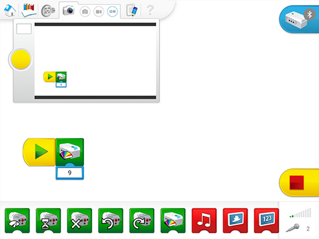

Take a Screen Capture of Your Program
Have your pupils practice documenting the program strings that they have used in their project by taking a screen capture of their program.

Have them use the Documentation tool to describe the program strings that they have used in their project.

Present Your Work
Before you move on to the next part of the Getting Started Project, allow your pupils to express themselves:
-
Have a short discussion about scientific and engineering instruments.
-
Ask them to describe the ways in which science rovers are helpful to humans.